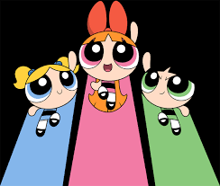

A história inicia quando o Professor Utônio tenta criar a menina
perfeita, usando como ingredientes açúcar, tempero e tudo que há de bom, mas, sem querer,
ele inseriu o Elemento X- que resultou em 3 meninas com super poderes.

Florzinha, Lindinha e Docinho, como são chamadas, são meninas em idade pré-escolar
e dividem a sua vida de criança – com dilemas infantis – com o fato de que elas usam
os seus superpoderes para proteger a cidade de Townsville.
Lindinha
Florzinha
Docinho
1998 ‧ Ficção científica
A história inicia quando o Professor Utônio tenta criar a menina
perfeita, usando como ingredientes açúcar, tempero e tudo que há de bom, mas, sem querer,
ele inseriu o Elemento X- que resultou em 3 meninas com super poderes.